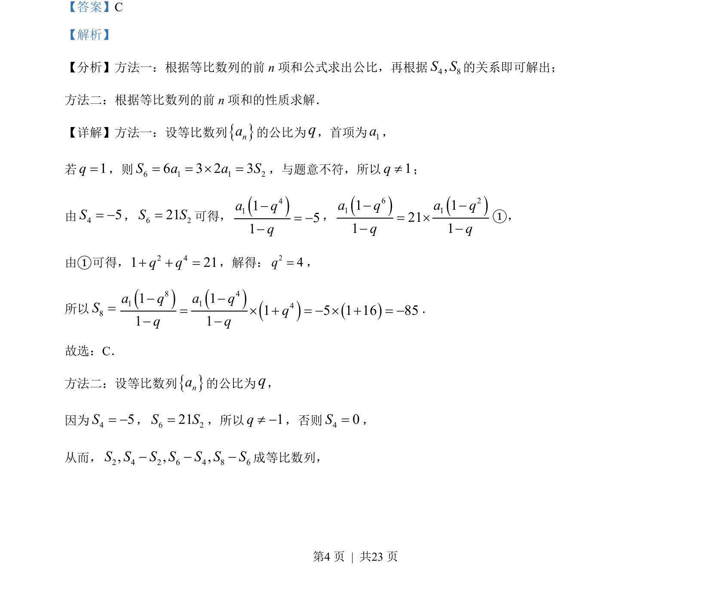
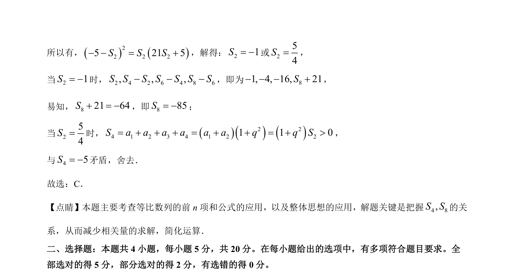

考点：等比数列 前n项和公式 等比中项 整体思想
等比数列
前n项和公式
等比中项
整体思想
本题主要考查等比数列的前n项和公式及性质，利用已知S₄、S₆与S₂的关系求S₈，体现整体代换思想。


📄 原 PDF 第 4 页：素材/真题/吉林/2008-2024·（吉林）数学高考真题/2023年高考数学试卷（新课标Ⅱ卷）（解析卷）.pdf
素材/真题/吉林/2008-2024·（吉林）数学高考真题/2023年高考数学试卷（新课标Ⅱ卷）（解析卷）.pdf